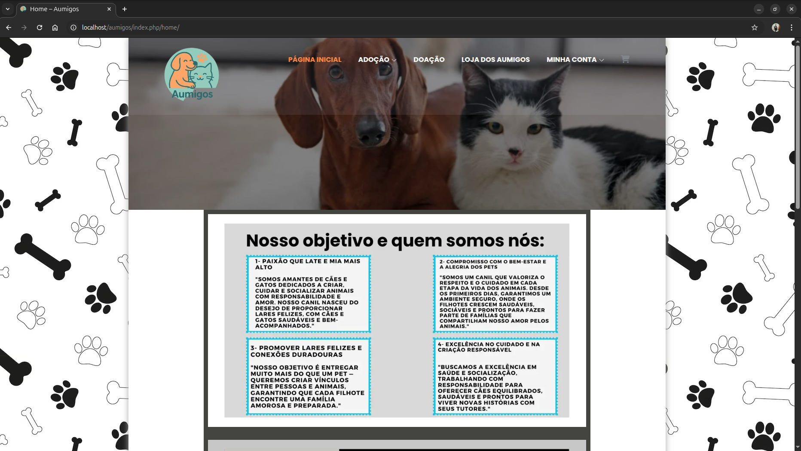
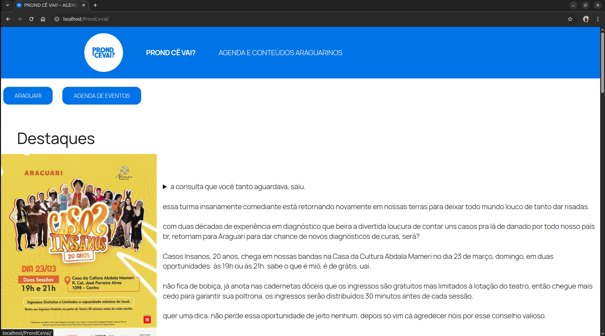
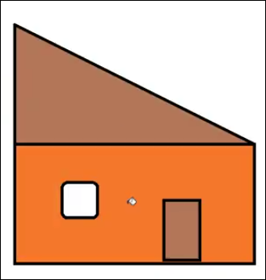
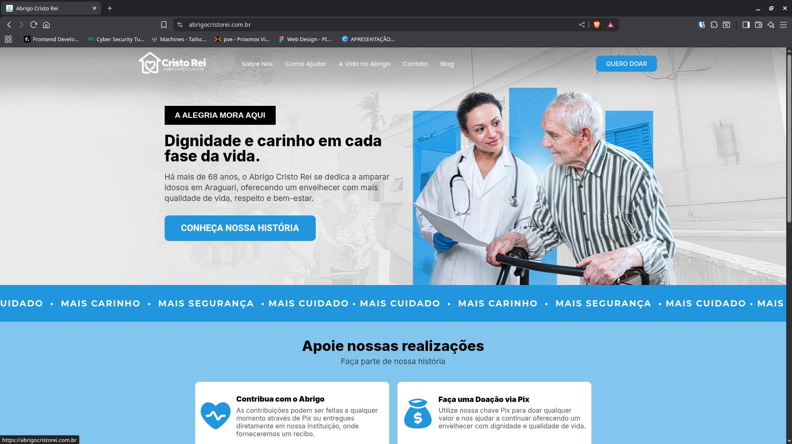
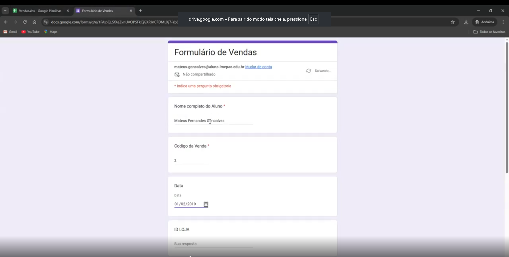

Meus Projetos Recentes

Site local para controle de finanças pessoais
Desenvolvido com auxílio de IA, com melhorias contínuas planejadas.

Site Aumigos - Projeto acadêmico (WordPress)
Representação de um site para um canil municipal, com funcionalidades adicionais.

Site ProndCeVai - Projeto acadêmico e pessoal (WordPress)
Criação de site completo para cliente, demonstrando organização e atenção aos detalhes.

Atividade acadêmica de automação em Python
Desenvolvimento de automação em Python utilizando PyAutoGUI para criação de desenho automático no Paint.
Vídeo demonstrativoLink do repositório

Project Owner - Abrigo Cristo Rei
Projeto integrador acadêmico no qual atuei como Project Owner.
Acessar site
Automação com PyAutoGUI para preenchimento de formulários
Automação de envio de formulários utilizando dados de planilha.
Vídeo demonstrativoLink do repositório

Automação e extração de dados com Selenium e Web Scraping
Extração de produtos com filtros de preço e geração de arquivos .xlsx.
Vídeo demonstrativo KabumVídeo demonstrativo Mercado Livre
Link do repositório